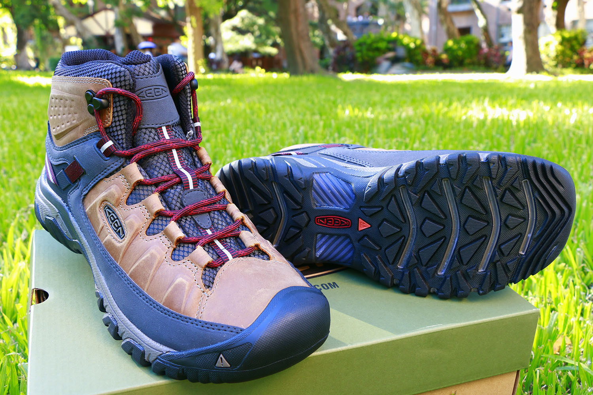
▲ KEEN TARGHEE III WP MID 開箱照
| TARGHEE 為系列名稱，III 指第三代，WP 為 waterproof（防水）之縮寫，MID 則表示 mid-height（中筒）。TARGHEE III 另有短筒版本，型號上省去 MID 字樣。 |
|---|
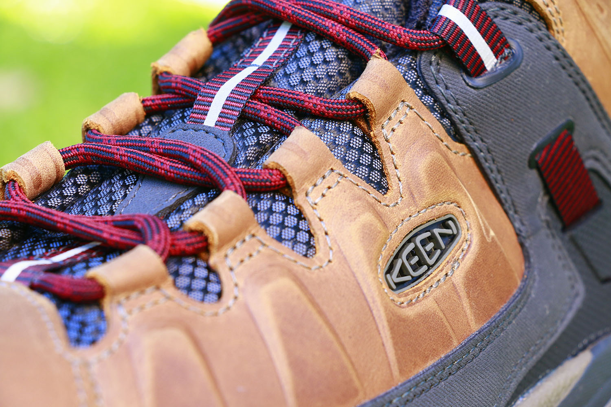
▲ TARGHEE III MID 鞋面外觀
TARGHEE III MID 酒紅色的織帶與鞋帶使它保有野性又不失優雅，鞋舌的部分則採用網狀編織的設計，不但使外觀看起來更加輕盈、活潑且多元，同時也提升鞋面的透氣性。鞋帶孔則是直接以皮革縫製而成，與鐵灰色的網眼部分形成交錯，剛柔之間更加融合。
此外，TARGHEE III MID 的鞋面縫線相當細膩，間距勻稱且不落線頭，貼合膠塗抹均勻不外溢、不殘留，做工相當細緻。鞋跟的大拉環更是讓使用者方便穿著。最貼心的是 TARGHEE III MID 的織帶皆具備反光條，夜間行走時更易於辨識、也更安全。
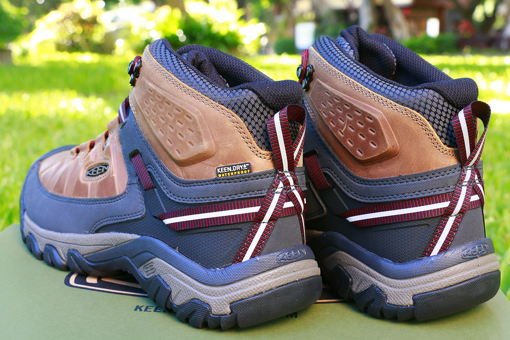
▲ TARGHEE III MID 後側外觀
整體而言，TARGHEE III MID 是一雙品質與美感兼具的登山靴，如果真的要挑剔點什麼，就是鞋帶勾的部分是塑膠材質而非金屬，雖然塑膠也可以達到足夠的強度，但其耐用性以及斷裂的可能性難免令人掛懷。
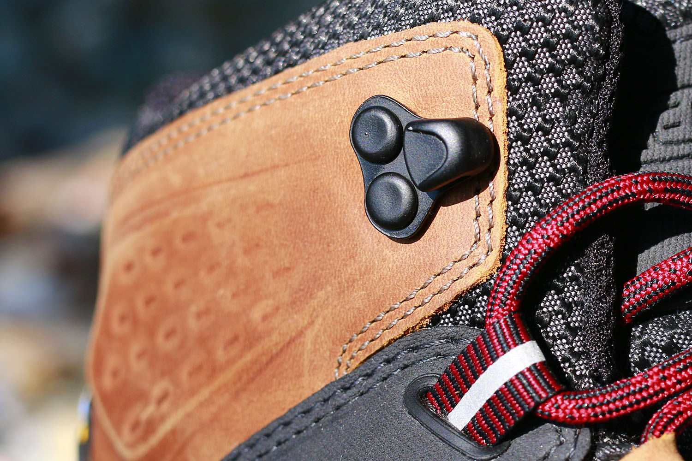
▲ TARGHEE III MID 塑膠製鞋帶勾
單隻 520 克的 TARGHEE III MID 稱得上是輕量化的鞋款，然而它也能夠應付四天的高山重裝行程。我穿著這雙鞋、揹負 20 公斤、花費四天三夜攀登南湖大山，雖然過程並非十全十美，但TARGHEE III MID 的表現著實令我驚豔。
【在荒野中保持舒適】
一雙鞋的舒適性本身是一個很主觀的感受，畢竟每個人的腳型和習慣的軟硬性都不盡相同，不過當多數的使用者都讚賞其舒適度時，它便具有做為客觀指標的特性。TARGHEE III MID 所主張的舒適性就是這麼一回事。
在拿到這雙鞋之前，我做了些功課，特別是全世界使用者對於這雙鞋的評論，其中有一點令我印象深刻，是許多使用者聲稱穿這雙鞋不需要經歷磨合期。意思是，新鞋買來開箱以後，不用經歷暖鞋（穿軟）的過程便相當舒適。收到新鞋後，我將信將疑地隔天就穿上它從劍潭一路走到內湖金面山，確實如評論所言，新鞋一上腳就感覺十分服貼，當天走完 8 公里毫無不適，彷彿只是去公園散步。
不過有一點值得注意，由於我穿的是中筒的版本，鞋筒頂端會稍微磨擦到腳（不見得每個人都會發生），如果穿著中筒以上的襪子或束褲即可完全避免，短筒版本的鞋款則不會有這個問題。
TARGHEE III MID 舒適的關鍵在於採用壓製成型的 EVA 泡棉做為中底，因此具有高度柔軟性和彈性，能夠有效減緩衝擊，同時提供足部良好的支撐，號稱 S3。此外，TARGHEE III MID 選用符合人體工學設計的可拆式雙重密度 Metatomical 鞋墊，亦能夠提供腳跟至足弓良好的支撐與穩定性，增強避震效能，防止腳踝扭傷，且使腳掌的制動性能夠更加發揮。
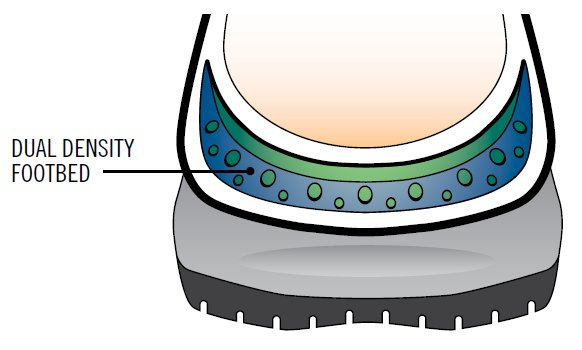
▲ 可拆式雙重密度 Metatomical 鞋墊結構示意圖
| EVA 原文為 ethylene-vinyl acetate（乙烯／乙酸乙烯酯共聚物，又稱「超塑烯」），這種塑料具有高度柔軟性和彈性，能夠有效減緩衝擊，達到減震的功能。Metatomical 為 metatarsals（蹠骨）和 anatomical（解剖的）兩者的複合字，意指其鞋墊的設計符合人類足部生理結構，讓使用者的腳掌能夠更加舒適與安全。S3 指的則是 shock（衝擊）、stability（穩定）以及 suspension（懸吊），意指 TARGHEE III MID 的中底能夠同時達到避震以及穩定的功能。 |
|---|
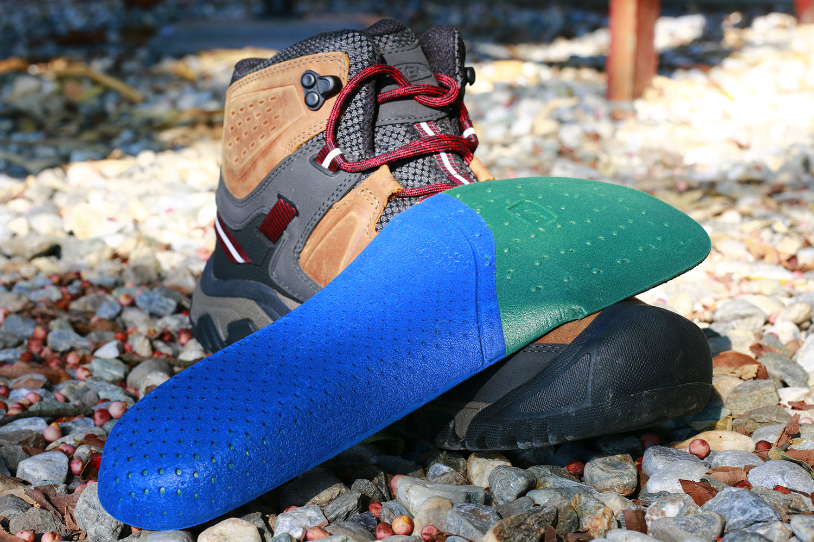
▲ 可拆式雙重密度 Metatomical 鞋墊
國外有些評論網站表示 TARGHEE III MID 展現舒適性的前提是行走在維護良好的路徑上，然而我自己對此有不同的心得。當我穿著 TARGHEE III MID 行走在平坦的道路或石階上時，不出 10 公里腳掌便開始略感疲勞；然而當我穿著 TARGHEE III MID 去五四縱走，在滿地泥濘或草木橫生的森林裡走上 20 公里，也未曾有疲憊的感覺。
【強悍的穩定性和保護力】
TARGHEE III MID 能夠帶給使用者高度的舒適性，也得歸功於它所配備的 ESS 全腳掌防護穩定片和 TPU 後跟穩定片。前者能夠分擔行走於崎嶇路面所產生的扭力，讓腳掌不致承受過大的力矩而扭或拉傷，後者則直接支撐腳後跟、特別是跟骨與跟腱（阿基里斯腱）。
| TPU 是 thermoplastic polyurethane（熱塑性聚氨酯）的縮寫，它是一種具有很強的彈性與扭轉剛性、並且相當耐磨的塑料。ESS 則是 EVA-solid-sponge 的縮寫，它是以 EVA 為主體（占 45% - 48% 以上），添加多烯彈性體（約占 30%）以及合成橡膠（約占 20%）。ESS 較 TPU 來得輕量，雖然 ESS 的剛性不如 TPU，但由於製造成本低且耗時更短，因此被廣泛應用在鞋底做為穩定片。 |
|---|
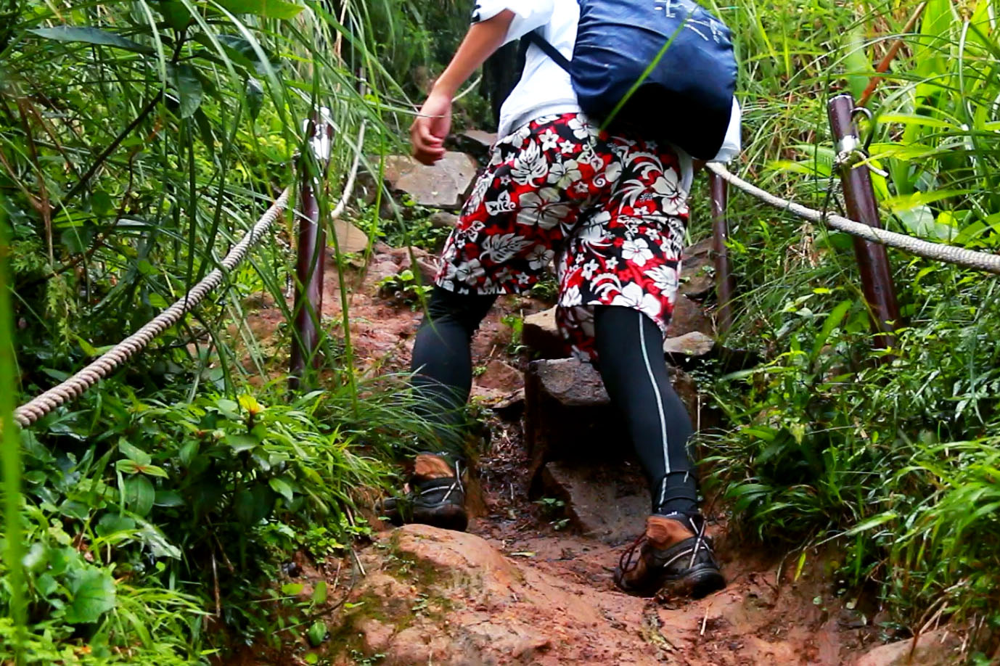
▲ TARGHEE III MID 的穩定性表現優良
TARGHEE III MID 的穩定性不只能夠發揮在路況較好的郊山步道，也能夠發揮在路況較為原始的百岳路線，例如以「辣」聞名的畢祿山與羊頭山。在完成郊山步道的測試後，我穿上 TARGHEE III MID 單攻畢羊縱走。
上下畢祿與羊頭的陡坡是相當精彩的，而連結畢羊的鋸齒連峰也擁有各種驚險地形，不但草木橫生、泥濘遍佈，還得時而攀登岩壁、時而下碎石坡。TARGHEE III MID 在各種地形中都表現得相當優異，在攀登的過程裡，我幾乎感覺不到自己是穿著鞋子在爬，每一步都那樣自然並且具有安全感。
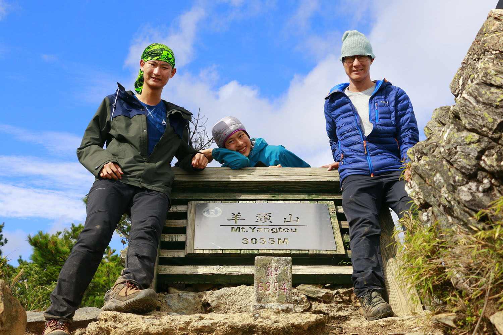
▲ 我與同行夥伴成功登頂羊頭山
如果我們再進一步觀察 TARGHEE III MID 的側邊，會發現除了皮革孔和最頂端的鞋帶勾外，第二鞋帶孔是連動織帶、並經由兩側鞋面連接固定於鞋後跟的 TPU 穩定片。這樣的設計未見於其他品牌的鞋款，它能讓鞋帶在繫緊的狀態同時固定腳跟，提供額外的穩定性，並且提升鞋對腳的包覆性。
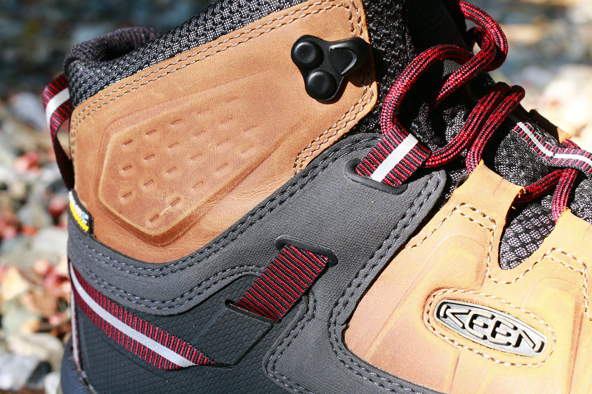
▲ 鞋帶連動織帶並固定於 TPU 後跟穩定片
談到 TARGHEE III MID 的包覆性，最重要的便是那大大片的鞋舌，它像一隻溫暖的大手掌，溫柔地從上方握住腳背，將整隻腳穩穩固定在鞋中。這使得我們穿著的時候，毋須擔心會因為綁太緊而過於壓迫、或是綁太鬆容易滑動。
此外，TARGHEE III MID 不僅為整隻腳提供了非常棒的包覆性，同時賦予腳趾頭自由自在游動的空間，和我過去穿過的登山鞋相比是前所未有的，我想這是 KEEN 鞋的特色。我的第一雙 KEEN 是 NEWPORT，它是一雙包頭涼鞋，也具備相同的設計，當時我沒有想過以包覆性為訴求的登山鞋也能辦到。
這就是 KEEN 專屬的腳趾頭保護設計，稱為「KEEN.PROTECT」，具備此設計的鞋款，其鞋頭會有個三角形驚嘆號的標誌作為識別。KEEN.PROTECT 不只是提供了舒適的空間給腳趾頭，避免因摩擦而產生的不適感或水泡，同時也能夠抵擋外部的衝擊或擠壓，避免直接碰撞腳趾頭而造成傷害。
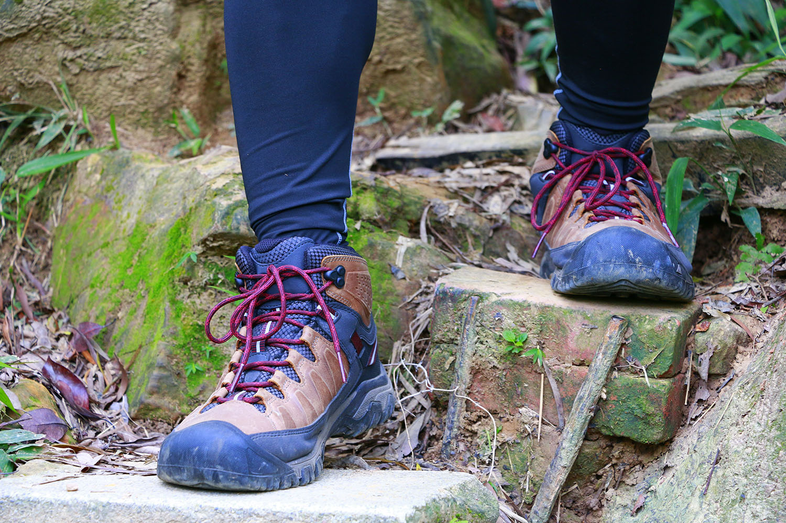
▲ TARGHEE III MID 具有相當紮實的 KEEN.PROTECT 鞋頭設計
【防水透氣科技獨樹一格】
一雙登山鞋的防水與透氣能力，是多數使用者相當（甚至是首要）關注的，特別是在長天數的登山行程中，腳能不能保持乾燥直接影響了舒適性的體驗；更嚴肅來說，腳是否乾燥也與安全議題息息相關。
一般說到防水透氣，大家第一個想到的或許是鼎鼎有名的「GORE-TEX」，其實除了 GORE-TEX 以外，目前市面上最主流、也最被廣為討論的防水技術還有 MERRELL 的「M-SELECT DRY」和 KEEN 的「KEEN.DRY」。這些技術各有優缺，防水能力、乃至於透氣能力都不盡相同，不同的使用者在不同的場合中可能會適合使用不同的產品，三者之間孰優孰劣並無標準答案。
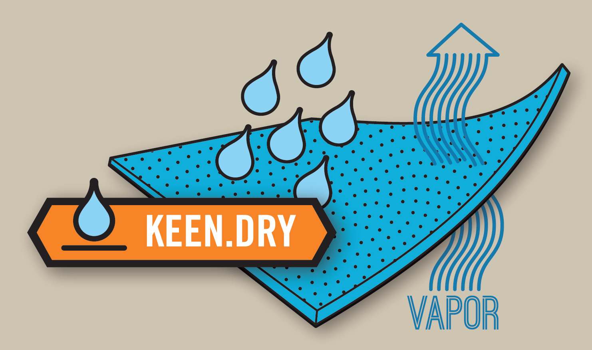
▲ KEEN.DRY 防水透氣科技示意圖
防水透氣的原理其實很簡單，就是「水滴進不去、蒸氣出得來」。大家可以想像水滴是個大胖子，水蒸氣相較之下嬌小無比，因此我們只需建立一堵牆，在上面開一些水滴過不去、但水蒸氣可以通過的大小的門，就能夠達到防水透氣的效果。這道牆便是所謂的「防水透氣薄膜」。在 KEEN 的鞋款當中，只要有 KEEN.DRY 標籤的鞋子皆配備防水透氣薄膜，包括這次介紹的 TARGHEE III MID。
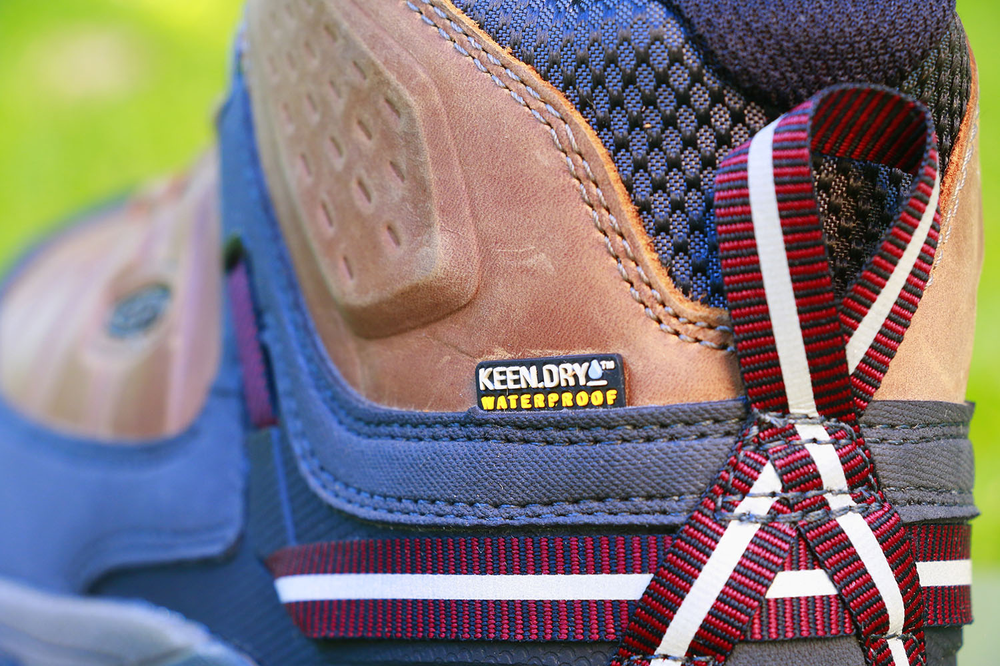
▲ TARGHEE III MID 配備 KEEN.DRY 防水透氣科技
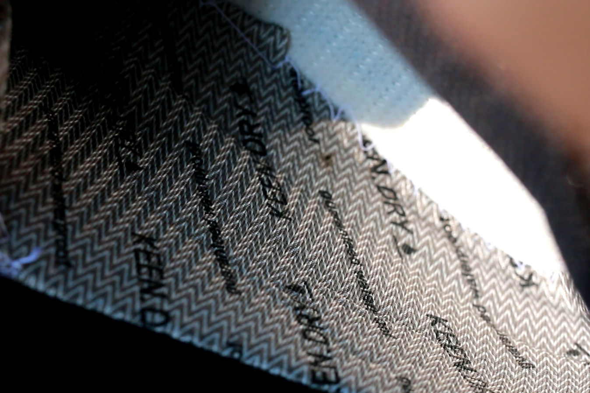
▲ 車縫於 TARGHEE III MID 內部的 KEEN.DRY 防水透氣布料
使用者對 KEEN.DRY 的普遍評論是其防水能力不如 GORE-TEX 那樣全面，但是透氣性較佳。當然，沒有任何一種防水透氣技術能夠完全阻絕水滴滲透，但上述結論與我自己的體驗是相同的。比較令人驚喜的是，TARGHEE III MID 大面積的皮革外衣讓它的防水性能更上一層樓。
在測試 TARGHEE III MID 這半個月裡，我總共穿著 TARGHEE III MID 爬了九天山，其中高達八天遇到下雨，正好能夠一次次地檢驗 KEEN.DRY 的防水性能。
第一次遇到大雨，是在界寮縱走的路上，那天我穿著 TARGHEE III MID 在滿布泥濘的山徑中走了 8 公里，並且在毫無遮蔽的五指山路段淋了一個多小時雨，下山後只有前腳掌的部分略為潮濕。第二次淋雨則是五四縱走，那天從粗坑口上到五分山稜線的三個小時裡都是大雨滂沱，沿途更刷了超過 15 公里的草，一路上腳都仍然保持十分乾燥，只有在最後登上姜子寮的時後開始滲水。
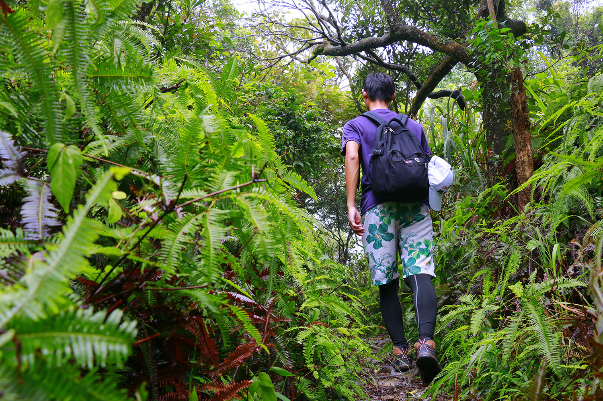
▲ 穿著 TARGHEE III MID 征戰滿地泥濘的界寮縱走
而這九天爬山的行程裡頭，最硬的防水測試則是在攀登南湖大山的最後一天，那天因為米塔颱風來襲，並且發布海上陸上警報，因此從雲稜山莊前往勝光登山口沿途都是風狂雨驟。由於從前一晚開始，山區已經下了一整夜的雨，整條路徑沿線都是水流與泥濘不斷，再加上背負重裝 15 公斤，對於鞋子的性能來說是極大的挑戰。幸好，TARGHEE III MID 並沒有讓人失望，在這樣嚴苛的條件裡，它撐到勝光山前（710 林道）才因為泥濘過深而進水，前面大部分較危險的路段都將腳保持得非常舒適。
【頑強地攀附各種地形】
TARGHEE III MID 不只防水透氣的性能好，止滑力更是一流，不論是陡峭的岩壁還是溼滑的土坡都能夠附著得相當穩固。
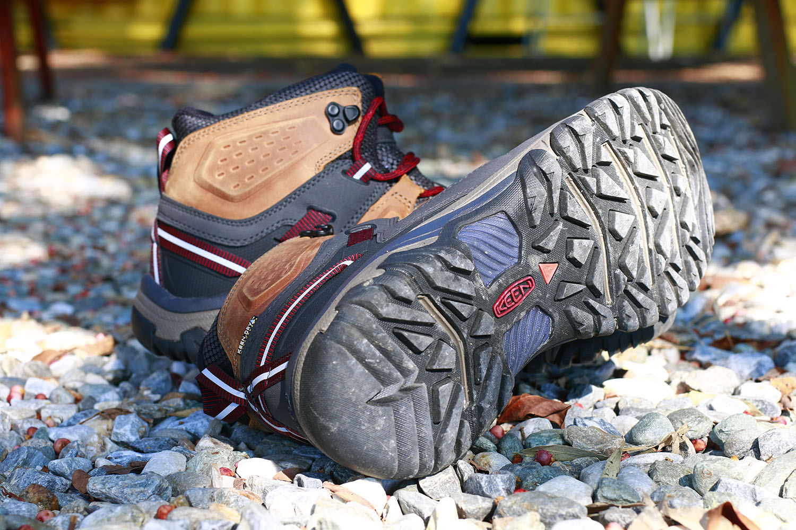
▲ TARGHEE III MID 之 4mm 多向鞋紋橡膠大底
與主流登山鞋所採用的 Vibram「黃金大底」不同，TARGHEE III MID 配備 KEEN 自家的 4mm 多向鞋紋橡膠大底。這款橡膠大底比較軟，剛性沒有 Vibram 來得強，彈性較高，因此行走起來會比較舒服，耐磨性則是與 Vibram 相當，在硬泥地上的止滑表現雖然仍較 Vibram 略遜一籌，但在台灣中海拔地區常見的樹根地形則是勝過 Vibram。
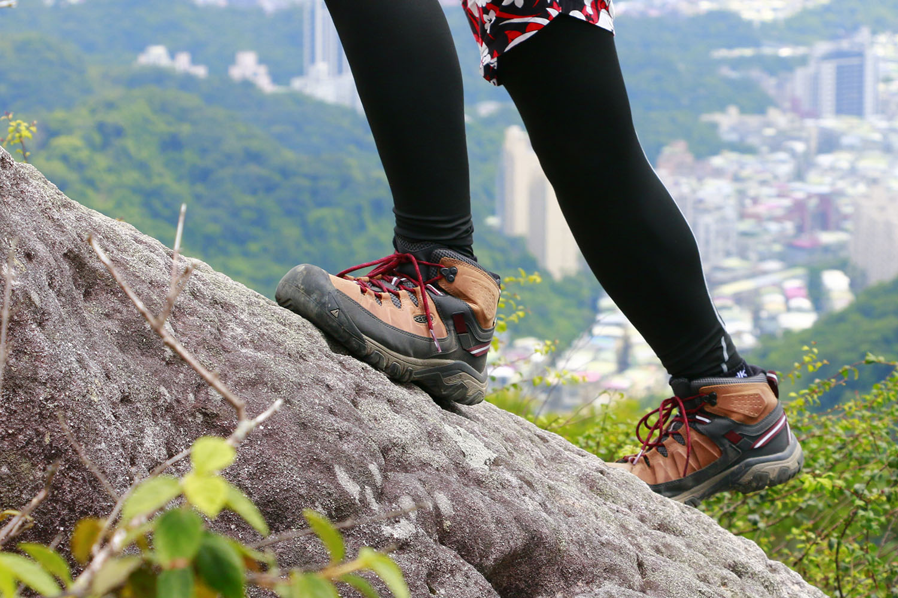
▲ TARGHEE III MID 的抓地力相當出色
硬泥地與樹根是畢羊縱走最主要的地形，在那次的測試中，與我同行的夥伴穿著配備 Vibram 黃金大底的鞋款，在羊頭山往慈恩登山口那段陡下就吃盡苦頭，而我只要一遇樹根地形便健步如飛。
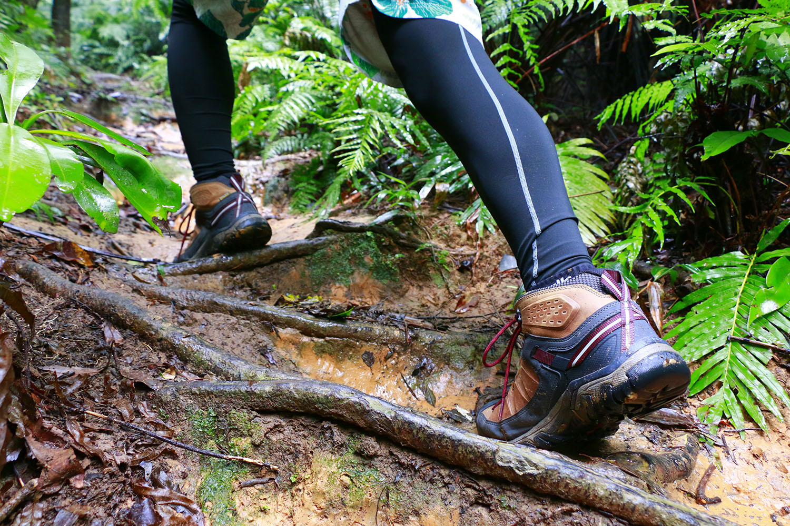
▲ KEEN 的 4mm 多向鞋紋橡膠大底適合樹根與泥地
不過這款大底也並非毫無缺點，由於它的顆粒較大，深度較深，硬度也比一般的健行鞋大底來得高，因此在台北郊山時常出現的潮濕石階上便相當吃虧。我在實測的過程中，遭遇到最顯著的影響，是在大屯山主峰下大屯坪那段長長的階梯。因為下雨的緣故，階梯本身就相當濕滑，偏偏梯面又是朝著下坡方向傾斜，真是讓我一路不斷驚險打滑。
其實不論是 KEEN 的 4mm 多向鞋紋橡膠大底，還是傳統的 Vibram 黃金大底，不同的地形本來就需要不同的設計來適應。事實上，KEEN 不同的鞋款也配備不同的大底，就連 Vibram 大底也並非一種產品，而是擁有一系列不同的設計，選擇適合的鞋款來因應需要面對的地形才是安全之道。而從我這系列的行程測試下來，TARGHEE III MID 在大部分我們登山時會遇到的地形中，止滑力的表現都非常棒，特別是在越原始的野地裡表現越好。
【不發臭又好清潔】
每一次登山回來，特別是長天數的行程，勢必得面臨清潔以及除臭的問題。TARGHEE III MID 搭載了 Cleansport NXT 微生物氣味控制技術，它的原理是以纖維表面的微生物來分解汗水和細菌所產生的臭味分子，藉此達到去除異味的效果。
▲ Cleansport NXT 微生物氣味控制技術示意影片
| 路線 | 日期 | 天氣 | 行走距離 | 負重 | 地形 | 測試重點 |
|---|---|---|---|---|---|---|
| 劍潭山。金面山 | 9/14 | 晴 | 8 公里 | 5 公斤 | 石階、泥土、岩塊 | 馴鞋 |
| 界寮縱走 | 9/16 | 陰轉豪雨 | 12 公里 | 7 公斤 | 石階、泥土、樹根、柏油路 | 止滑、防水、透氣 |
| 五四縱走 | 9/17 | 豪雨轉陰 | 20 公里 | 8 公斤 | 泥土、樹根、岩塊、柏油路 | 止滑、防水、透氣 |
| 陽明山大縱走西段 | 9/18 | 狂風暴雨 | 14 公里 | 10 公斤 | 木階、石階、樹根、柏油路 | 舒適、穩定、保護 |
| 畢羊縱走 | 9/23 | 晴轉陰雨 | 20 公里 | 7 公斤 | 泥土、樹根、碎石、岩壁 | 輕裝綜合測試 |
| 南湖群峰 | 9/27-30 | 颱風警報 | 40 公里 | 20 公斤 | 泥土、樹根、碎石、岩塊 | 重裝綜合測試 |
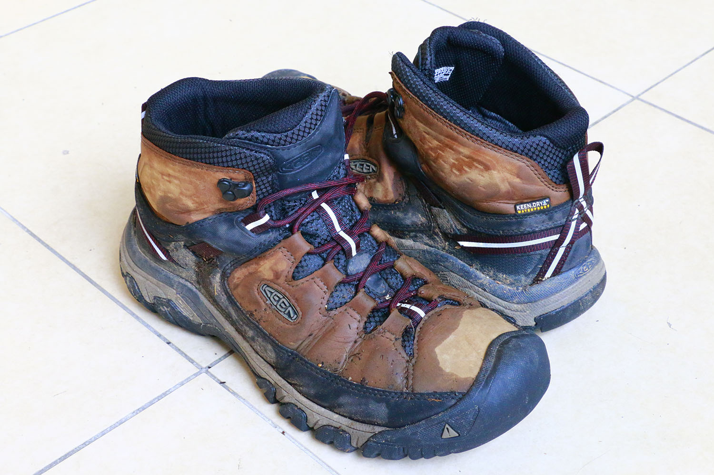
▲ 剛完成六次野外實測、自南湖大山歸來的 TARGHEE III MID
經歷了連日來的重重摧殘，TARGHEE III MID 的表面毫無毀損，除了髒汙，除了因運動而留下的揉褶痕跡外，整雙鞋儼然新的一樣，好幾次被樹枝或岩石刮擦的痕跡早已消失得無影無蹤。
而鞋底的部分，在行走超過 110 公里（若考慮登山前後的行走距離，則約為 120 公里）後，不同部位的耗損約介於 0 至 0.3 毫米之間，換句話說，4 毫米的鞋底可以擁有超過 1200 公里的壽命。TARGHEE III MID 的大底雖不及重型登山靴耐用，但就輕量化中筒登山鞋而言則是高於水準的，特別是攀登南湖大山的 40 公里中，幾乎都揹負 15 至 20 公斤的重裝。
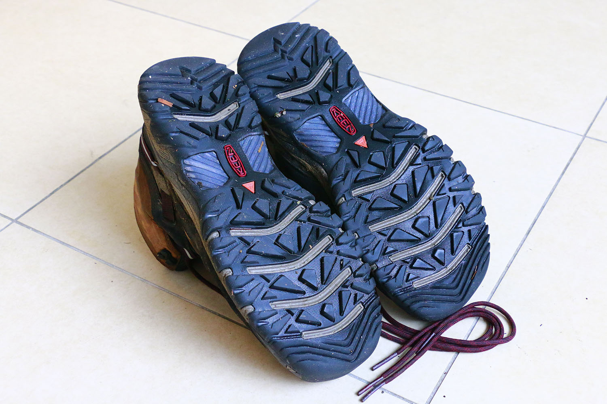
▲ 經歷 120 公里行走後的 TARGHEE III MID 大底
【總結】
在這篇文章裡，我把登山鞋的性能分為八大指標，並以此來考察 KEEN TARGHEE III MID 的性能。在經歷了兩週野外實測以後，我發現 TARGHEE III MID 在各方面的表現都相當優秀，以其產品和價格定位而言，是一雙投資報酬率相當高的鞋。
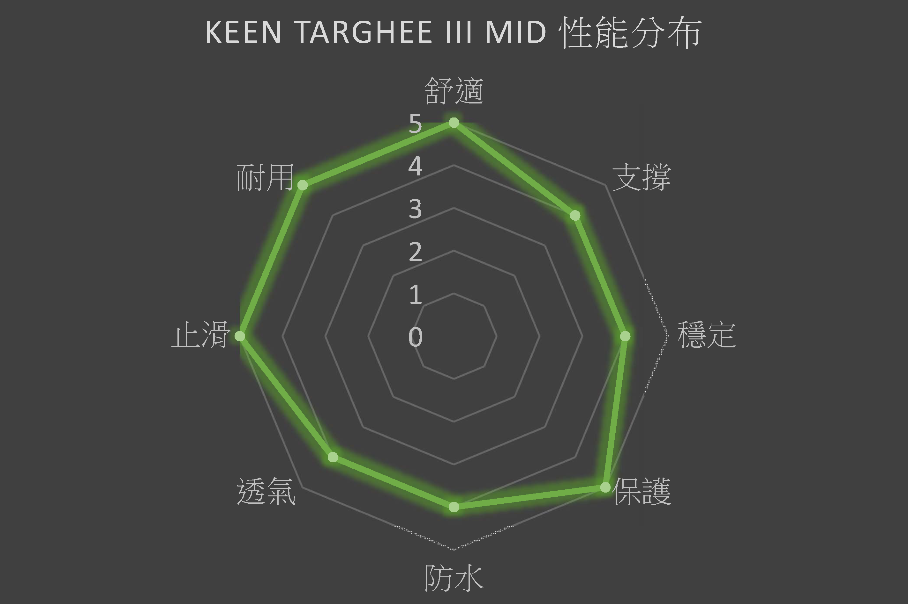
▲ KEEN TARGHEE III MID 性能分布
TARGHEE III MID 的優勢是具有相當高的舒適度，同時能夠有效保護腳部（特別是腳趾）以減少外力衝擊造成傷痛的可能。它典雅的外觀相當吸睛，並且保持超越水準的耐用度。它的止滑能力非常出色，特別是在台灣常見的泥土和樹根地形，可以說是無往不利。
TARGHEE III MID 的弱點則是不適合行走在大面積平坦且潮濕的石階，那會像走在冰面上一樣滑且不穩定。另外則是其中筒的設計，在腳踝的保護上先天不如高筒登山靴，因此這雙鞋恐怕不適合超過五天的長天數重裝縱走的行程。
如果是行走較為原始的中低海拔路線，或是四天以內的短天數高山百岳行程，TARGHEE III MID 會是一位好夥伴。如同我在文章開頭所說：「路越野、鞋越狂」，TARGHEE III MID 是一雙為親近荒野而生的登山鞋。
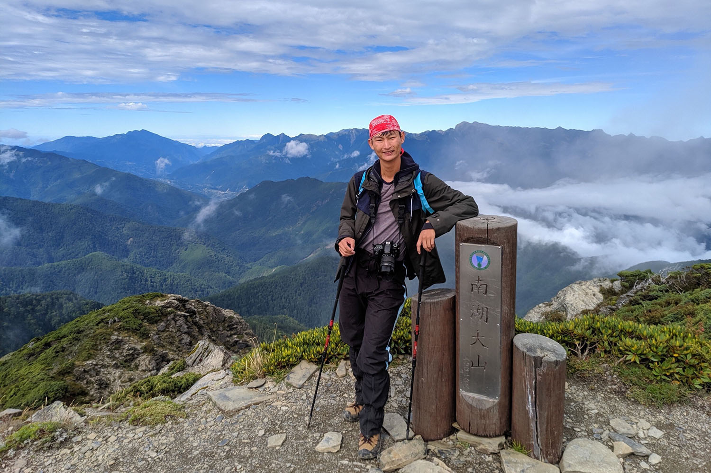
▲ 登頂南湖大山（照片來源：隊友阿哲）
最後，我要感謝宇宙浪人工作室的三位夥伴 Shaun、En 和 Alan，不論是一起在山上東奔西闖，或是在幕後出謀獻策，都為這個鞋測帶來很多幫助。我還得另外感謝這次一起攀登南湖的隊友（Q 毛、阿哲、阿亮）和山友們，你們為這四天三夜的旅程帶來很多歡樂。我們還有很多很多故事，串起已被淡忘的過往的緣分，我們曾經「在山路上相遇」，未來也還會「在山路上相遇」。
本文同步發表於健行筆記： ● 【鞋測】一個理工魂噴發的實測—路越野鞋越狂之 KEEN TARGHEE III 本產品由 KEEN Taiwan 贊助。